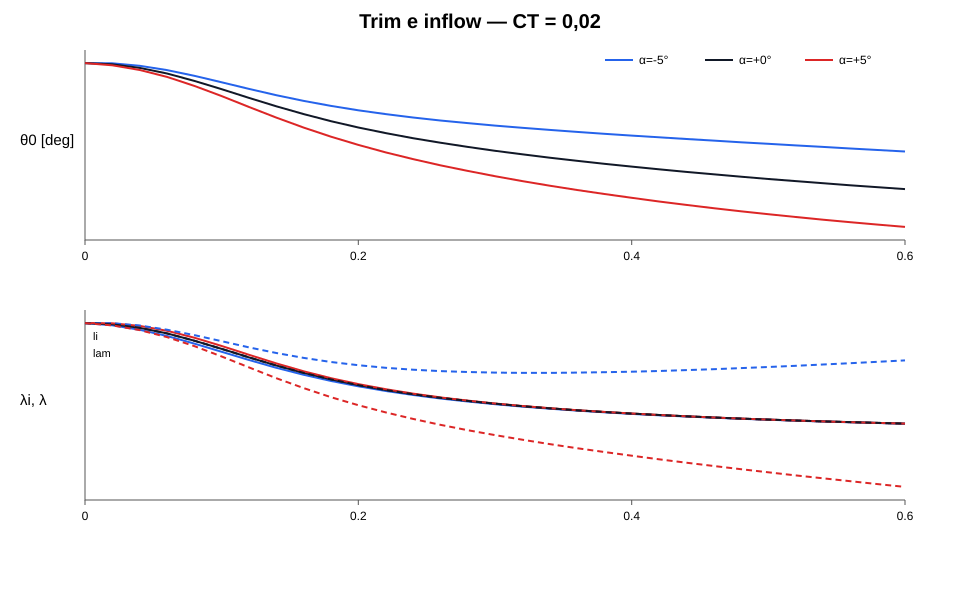
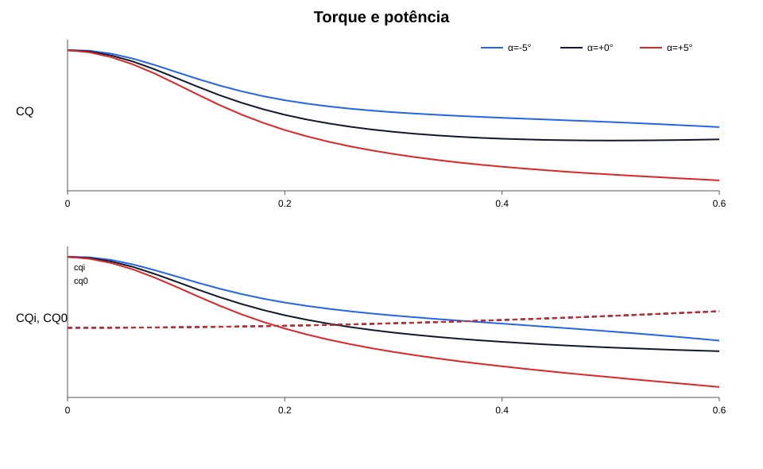
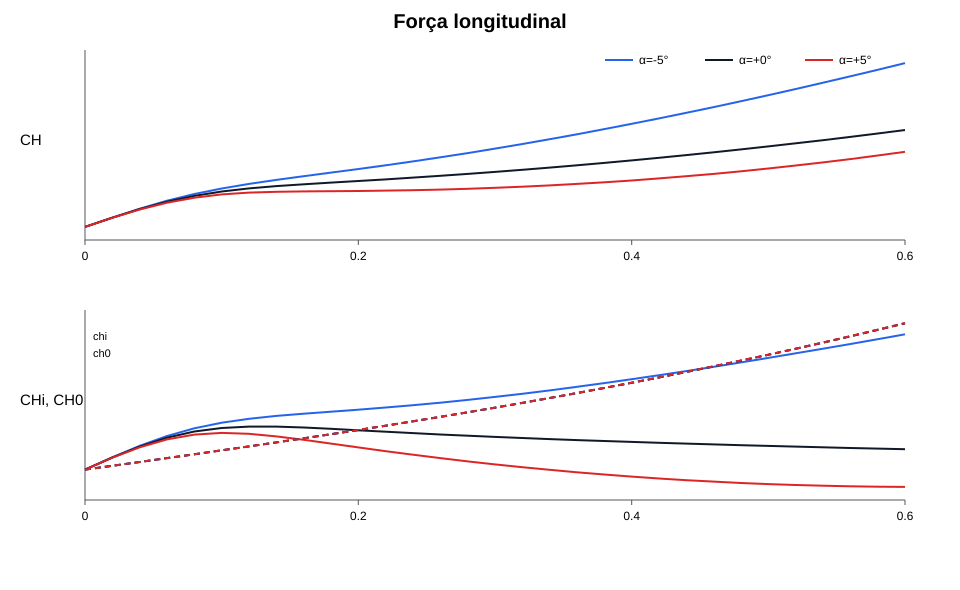
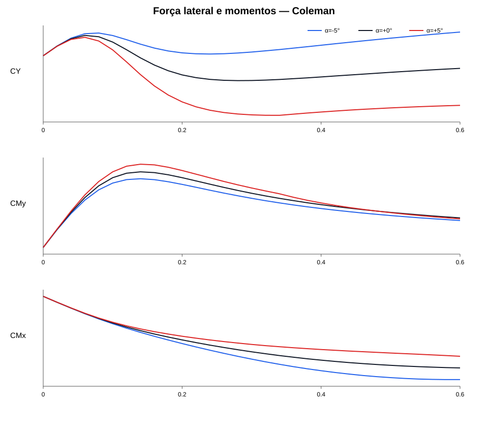
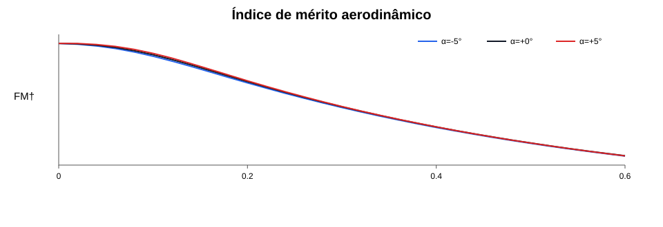

Sumário
- 1. Introdução
- 2. Hipóteses, sinais e adimensionalização
- 3. Cinemática e equações elementares
- 4. Inflow uniforme e inflow de Coleman
- 5. Momentos radiais: a notação que compacta todas as fórmulas
- 6. Coeficiente de tração CT
- 7. Coeficiente de torque induzido CQi
- 8. Coeficiente de torque de perfil CQ0
- 9. Coeficiente de torque total CQ
- 10. Coeficiente de força longitudinal induzida CHi
- 11. Coeficiente de força longitudinal de perfil CH0
- 12. Coeficiente de força longitudinal total CH
- 13. Coeficiente de força lateral CY
- 14. Coeficiente de momento de arfagem CMy
- 15. Coeficiente de momento de rolamento CMx
- 16. Inflow induzido lambda_i
- 17. Inflow total lambda
- 18. Coeficiente de potência CP
- 19. Figura de mérito
- 20. Tabela de fórmulas para inflow uniforme
- 21. Tabela de fórmulas para inflow de Coleman
- 22. Exemplo numérico: rotor genérico com CT = 0,02
- 23. Limites de validade
- 24. Conclusão
1. Introdução
A estimativa preliminar de um rotor frequentemente exige resultados antes de existir um modelo de alta fidelidade. Com poucas entradas, é possível estimar a ordem de grandeza da tração, do torque, das forças no plano do rotor, dos momentos de cubo e do inflow a partir da solidez, do passo, da torção, da razão de avanço, da incidência do disco e de um modelo simples de arrasto. A teoria de elemento de pá fornece a ligação entre a geometria da pá e essas cargas.
Uma formulação de baixa ordem pode preservar a derivação física e ainda permitir estimativas rápidas. O nível mais geral compatível com integração analítica permite que solidez local, inclinação da curva de sustentação e passo variem com o raio. O inflow pode ser uniforme ou incluir o gradiente longitudinal de Coleman–Feingold. As equações se reduzem em etapas para pá retangular, inclinação de sustentação constante, torção linear, corte de raiz arbitrário, ausência de corte de raiz e, por fim, pá sem torção.
O rotor é deliberadamente rígido. Não há batimento, avanço-recuo, conicidade, deformação elástica ou movimento cíclico da pá. Essa escolha elimina a realimentação entre cargas aerodinâmicas e movimento da pá e isola a contribuição aerodinâmica direta. Como consequência, os momentos e as forças no plano do rotor não representam um rotor articulado ou flexível em equilíbrio, pois o batimento redistribui a carga azimutal nesses sistemas.
A base matemática segue a organização clássica de Johnson [1]: cinemática local, elemento de pá, média azimutal e integração radial. Para o gradiente de inflow, usa-se a forma adotada pelo NDARC [2], baseada no campo induzido de Coleman, Feingold e Stempin [3]. As reduções de baixa ordem também seguem a formulação clássica de Helicopter Theory [4]. O fechamento entre tração e velocidade induzida vem da teoria de quantidade de movimento.
Quase todas as fórmulas relevantes podem ser escritas com três famílias de momentos radiais. Uma vez calculados esses momentos, alterar torção, afilamento de corda, corte de raiz ou distribuição de propriedades deixa de exigir uma nova derivação completa.
2. Hipóteses, sinais e adimensionalização
Considere um rotor de raio \(R\), área de disco \(A=\pi R^2\), número de pás \(B\) e velocidade angular \(\Omega\). A coordenada radial adimensional é
\[ x=\frac{r}{R}. \]
A região aerodinâmica começa em \(x_0=r_0/R\) e termina em \(x=1\).
Para uma pá com distribuição radial de corda \(c(x)\), define-se a solidez local
\[ \boxed{ \sigma(x)=\frac{B\,c(x)}{\pi R}. } \]
As fórmulas fechadas usam uma solidez \(\sigma\) associada a uma planform de referência. Essa planform ocupa \(0\leq x\leq1\) e prolonga para dentro do corte de raiz a mesma lei radial de corda adotada na região aerodinâmica. Se a lei de corda não tiver continuação natural, a planform de referência deve ser especificada explicitamente.
Se \(S_{\mathrm{ref}}\) é a área total das \(B\) pás da planform de referência,
\[ S_{\mathrm{ref}} = B\int_0^R c_{\mathrm{ref}}(r)\,dr, \]
a solidez é
\[ \boxed{ \sigma =\frac{S_{\mathrm{ref}}}{A} =\frac{S_{\mathrm{ref}}}{\pi R^2}. } \]
Defina a corda média da planform de referência por
\[ \bar c_{\mathrm{ref}} =\frac{1}{R}\int_0^R c_{\mathrm{ref}}(r)\,dr. \]
A mesma solidez pode ser escrita como
\[ \boxed{ \sigma =\frac{B\bar c_{\mathrm{ref}}}{\pi R}. } \]
A distribuição de corda da planform de referência pode ser normalizada por
\[ \hat c(x) =\frac{c_{\mathrm{ref}}(x)}{\bar c_{\mathrm{ref}}}, \qquad \int_0^1\hat c(x)\,dx=1. \]
Na região aerodinâmica,
\[ \boxed{ \sigma(x)=\sigma\hat c(x), \qquad x_0\leq x\leq1. } \]
O corte de raiz não altera \(\sigma\). Ele entra pelos limites de integração e, nas fórmulas para pá retangular, pelos fatores \(J_n\). Para uma planform retangular, \(c_{\mathrm{ref}}=c\), \(S_{\mathrm{ref}}=BcR\) e
\[ \boxed{ \sigma=\frac{Bc}{\pi R}. } \]
A razão de avanço é
\[ \boxed{\mu=\frac{V_h}{\Omega R}}, \]
onde \(V_h\) é a componente da velocidade do ar no plano do rotor. A componente axial externa é adimensionalizada por
\[ \boxed{\mu_z=\frac{V_z}{\Omega R}}. \]
Adota-se \(\alpha>0\) para vento vindo de baixo. Para uma incidência \(\alpha\) do escoamento,
\[ \boxed{\mu_z=-\mu\tan\alpha}. \]
O inflow induzido médio é \(\lambda_i>0\) no sentido descendente através do disco em regime normal. O inflow total médio é
\[ \boxed{\lambda=\mu_z+\lambda_i}. \]
Os coeficientes globais são
\[ C_T=\frac{T}{\rho A(\Omega R)^2}, \qquad C_Q=\frac{Q}{\rho A(\Omega R)^2R}, \]
\[ C_H=\frac{H}{\rho A(\Omega R)^2}, \qquad C_Y=\frac{Y}{\rho A(\Omega R)^2}, \]
\[ C_{Mx}=\frac{M_x}{\rho A(\Omega R)^2R}, \qquad C_{My}=\frac{M_y}{\rho A(\Omega R)^2R}. \]
Adota-se \(C_H>0\) para força longitudinal para trás, \(C_Y>0\) para a direita, \(C_{Mx}>0\) para rolamento que baixa a asa direita e \(C_{My}>0\) para arfagem de nariz para cima.
As hipóteses aerodinâmicas usadas nas fórmulas fechadas são:
- sustentação bidimensional linear, \(C_l=a(x)\alpha_e\)
- pequenos ângulos de inflow
- sem estol e sem correção explícita de compressibilidade
- \(C_{d0}\) representando o arrasto de perfil médio
- sem gradiente lateral de inflow
- sem comandos cíclicos
- sem batimento e sem avanço-recuo.
Quando uma fórmula integral de perfil é usada, a velocidade radial e o fluxo reverso são mantidos. Quando uma fórmula fechada simplificada é usada, a aproximação \(W\simeq u_T\) é aplicada.
3. Cinemática e equações elementares
Com o azimute \(\psi\) medido no sentido de rotação, a componente tangencial adimensional da velocidade relativa é
\[ \boxed{u_T=x+\mu\sin\psi}. \]
A componente radial é
\[ \boxed{u_R=\mu\cos\psi}. \]
A distribuição de passo é escrita como \(\theta(x)\) e pode ser arbitrária.
Para pequenos ângulos, o ângulo de inflow local é aproximadamente
\[ \phi\simeq\frac{\lambda_d}{u_T}, \]
e o ângulo de ataque efetivo é
\[ \alpha_e\simeq\theta(x)-\frac{\lambda_d}{u_T}. \]
Com \(C_l=a(x)\alpha_e\), a força normal elementar adimensional torna-se
\[ \boxed{ dC_N= \frac{\sigma(x)a(x)}{4\pi} \left[ \theta(x)u_T^2-\lambda_d u_T \right]dx\,d\psi. } \]
A integração de \(dC_N\) fornece \(C_T\), \(C_{Mx}\) e \(C_{My}\).
A parcela tangencial associada à inclinação da sustentação pode ser escrita, na mesma ordem de aproximação, como
\[ \boxed{ dC_{F,i}= \frac{\sigma(x)a(x)}{4\pi} \left[ \theta(x)\lambda_d u_T-\lambda_d^2 \right]dx\,d\psi. } \]
Ela gera \(C_{Qi}\), \(C_{Hi}\) e \(C_Y\) na formulação BET simplificada.
Para o perfil, a forma fechada mais simples usa
\[ \boxed{ dC_{F,0}= \frac{\sigma(x)C_{d0}(x)}{4\pi}u_T^2\,dx\,d\psi. } \]
Para manter velocidade radial, velocidade axial externa e fluxo reverso, usa-se
\[ \boxed{ W= \sqrt{ u_T^2+u_R^2+\mu_z^2 }. } \]
A formulação integral de perfil conserva o sinal de \(u_T\). Assim, a região de fluxo reverso não exige uma regra separada.
As médias azimutais que aparecem repetidamente são
\[ \left\langle u_T^2\right\rangle = x^2+\frac{\mu^2}{2}, \]
\[ \left\langle \lambda_d u_T\right\rangle = \lambda x, \]
\[ \left\langle \lambda_d^2\right\rangle = \lambda^2+\frac{L^2x^2}{2}, \]
\[ \left\langle \lambda_d u_T\sin\psi\right\rangle = \frac{\lambda\mu}{2}, \]
\[ \left\langle \lambda_d u_T\cos\psi\right\rangle = \frac{Lx^2}{2}, \]
\[ \left\langle \lambda_d^2\cos\psi\right\rangle = \lambda Lx. \]
Essas identidades explicam por que Coleman altera alguns coeficientes e deixa outros invariantes.
4. Inflow uniforme e inflow de Coleman
Inflow uniforme
No modelo uniforme,
\[ \boxed{ \lambda_d(x,\psi)=\lambda. } \]
Não existe primeiro harmônico longitudinal:
\[ \boxed{L=0}. \]
Esse modelo preserva apenas o valor médio do inflow.
Coleman–Feingold
A aproximação longitudinal de Coleman escreve o campo como
\[ \boxed{ \lambda_d(x,\psi)=\lambda+Lx\cos\psi. } \]
O primeiro harmônico é
\[ \boxed{L=K_x\lambda_i}, \]
com
\[ \boxed{ K_x= \frac{15\pi}{32} \frac{\mu} {\sqrt{\mu^2+\lambda^2}+|\lambda|}. } \]
O fator \(15\pi/32\) e a dependência com o ângulo de inclinação da esteira vêm do campo induzido de Coleman, Feingold e Stempin. O NDARC usa essa estrutura como uma aproximação simples de inflow não uniforme.
\(\lambda_i\) controla o nível médio de velocidade induzida, enquanto \(L\) controla a assimetria longitudinal. Um coeficiente integrado pode depender de uma ou de ambas as grandezas.
5. Momentos radiais: a notação que compacta todas as fórmulas
A geometria geral pode ser absorvida em três famílias de integrais.
Defina os momentos aerodinâmicos
\[ \boxed{ \mathcal A_n= \int_{x_0}^{1} \sigma(x)a(x)x^n\,dx } \]
e os momentos de passo
\[ \boxed{ \mathcal T_n= \int_{x_0}^{1} \sigma(x)a(x)\theta(x)x^n\,dx. } \]
Para o arrasto de perfil, defina
\[ \boxed{ \mathcal D_n= \int_{x_0}^{1} \sigma(x)C_{d0}(x)x^n\,dx. } \]
Essas três famílias bastam para as fórmulas fechadas.
Para pá retangular, \(\sigma(x)=\sigma\) na região aerodinâmica. Com \(a\) e \(C_{d0}\) constantes, define-se
\[ \boxed{ J_n= \int_{x_0}^{1}x^n\,dx = \frac{1-x_0^{n+1}}{n+1}. } \]
Então
\[ \mathcal A_n=\sigma aJ_n, \qquad \mathcal D_n=\sigma C_{d0}J_n. \]
Torção linear corresponde a gradiente de torção constante:
\[ \boxed{ \theta(x)=\theta_0+\theta_t x, \qquad \theta_t=\frac{d\theta}{dx}=\text{constante}. } \]
Nesse caso,
\[ \boxed{ \mathcal T_n= \sigma a \left( \theta_0J_n+\theta_tJ_{n+1} \right). } \]
Sem corte de raiz, \(x_0=0\) e
\[ J_0=1,\qquad J_1=\frac12,\qquad J_2=\frac13,\qquad J_3=\frac14,\qquad J_4=\frac15. \]
Sem torção, \(\theta_t=0\).
Essa notação permite derivar cada coeficiente uma única vez e aplicar as simplificações por substituição. Quando um degrau não altera determinado coeficiente, a etapa é mantida explicitamente e a expressão permanece inalterada.
Escadas independentes de simplificação
A simplificação geométrica e a fidelidade aerodinâmica são independentes.
A escada geométrica é:
- distribuição radial arbitrária: \(\sigma(x)\), \(a(x)\), \(\theta(x)\) e \(C_{d0}(x)\), condensadas em \(\mathcal A_n\), \(\mathcal T_n\) e \(\mathcal D_n\).
- pá retangular, \(a\) e \(C_{d0}\) constantes, torção linear e corte de raiz arbitrário, condensados em \(J_n\).
- ausência de corte de raiz, ainda permitindo torção linear.
- ausência de torção, produzindo a fórmula de bolso mais curta.
Para os termos de perfil existe uma escada de fidelidade de três níveis:
- integral vetorial completa do arrasto, mantendo velocidade radial, velocidade axial externa e fluxo reverso.
- fechamento analítico de escoamento radial (yawed flow ou spanwise flow), com a integral de perda de perfil e sua redução de Bennett.
- BET tangencial mínima, com \(W\simeq u_T\) e sem a contribuição de arrasto associada ao escoamento radial.
Torção não aparece explicitamente em \(C_{Q0}\) e \(C_{H0}\) enquanto \(C_{d0}\) for constante. Se uma polar \(C_d(\alpha,M,Re)\) for usada, passo, torção e distribuição de carga voltam a alterar o arrasto local.
6. Coeficiente de tração CT
A tração é a integral da força normal:
\[ C_T= \int_0^{2\pi} \int_{x_0}^{1} dC_N. \]
Substituindo a equação elementar e fazendo a média azimutal,
\[ C_T= \frac12 \int_{x_0}^{1} \sigma a \left[ \theta(x) \left( x^2+\frac{\mu^2}{2} \right) -\lambda x \right]dx. \]
O termo de Coleman \(Lx\cos\psi\) desaparece porque sua média com \(u_T\) é nula. Portanto,
\[ \boxed{ C_T= \frac12 \left[ \mathcal T_2 +\frac{\mu^2}{2}\mathcal T_0 -\lambda\mathcal A_1 \right]. } \]
Inflow uniforme
\[ \boxed{ C_{T,\mathrm{unif}}= \frac12 \left[ \mathcal T_2 +\frac{\mu^2}{2}\mathcal T_0 -\lambda\mathcal A_1 \right]. } \]
Coleman
\[ \boxed{ C_{T,\mathrm{Coleman}}= \frac12 \left[ \mathcal T_2 +\frac{\mu^2}{2}\mathcal T_0 -\lambda\mathcal A_1 \right]. } \]
Coleman modifica a distribuição local de tração, mas não a tração média nesta ordem de aproximação.
Pá retangular com torção linear e corte de raiz
\[ \boxed{ C_T= \frac{\sigma a}{2} \left[ \theta_0 \left( J_2+\frac{\mu^2J_0}{2} \right) + \theta_t \left( J_3+\frac{\mu^2J_1}{2} \right) -\lambda J_1 \right]. } \]
Sem corte de raiz, com torção linear
\[ \boxed{ C_T= \frac{\sigma a}{2} \left[ \theta_0 \left( \frac13+\frac{\mu^2}{2} \right) + \theta_t \left( \frac14+\frac{\mu^2}{4} \right) -\frac{\lambda}{2} \right]. } \]
Sem corte de raiz e sem torção
\[ \boxed{ C_T= \frac{\sigma a}{2} \left[ \theta_0 \left( \frac13+\frac{\mu^2}{2} \right) -\frac{\lambda}{2} \right]. } \]
Essa forma fornece uma estimativa fechada de baixa ordem.
Inversão para o coletivo
Em problemas de trim, frequentemente a incógnita útil é o coletivo \(\theta_0\). Para pá retangular, torção linear e corte de raiz arbitrário,
\[ \boxed{ \theta_0= \frac{ \dfrac{2C_T}{\sigma a} +\lambda J_1 -\theta_t\left(J_3+\dfrac{\mu^2J_1}{2}\right) } {J_2+\dfrac{\mu^2J_0}{2}}. } \]
Sem corte de raiz,
\[ \boxed{ \theta_0= \frac{ \dfrac{2C_T}{\sigma a} +\dfrac{\lambda}{2} -\theta_t\left(\dfrac14+\dfrac{\mu^2}{4}\right) } {\dfrac13+\dfrac{\mu^2}{2}}. } \]
Sem torção,
\[ \boxed{ \theta_0= \frac{ \dfrac{2C_T}{\sigma a}+\dfrac{\lambda}{2} } {\dfrac13+\dfrac{\mu^2}{2}}. } \]
7. Coeficiente de torque induzido CQi
Na BET simplificada, o torque induzido vem da força tangencial induzida multiplicada pelo braço \(x\):
\[ C_{Qi}^{\mathrm{BET}} = \int x\,dC_{F,i}. \]
Após a média azimutal,
\[ C_{Qi}^{\mathrm{BET}} = \frac12 \int_{x_0}^{1} \sigma a \left[ \theta\lambda x^2 -\lambda^2x -\frac{L^2x^3}{2} \right]dx. \]
Portanto,
\[ \boxed{ C_{Qi}^{\mathrm{BET}} = \frac12 \left[ \lambda\mathcal T_2 -\lambda^2\mathcal A_1 -\frac{L^2}{2}\mathcal A_3 \right]. } \]
O termo \(L^2\) aparece porque o torque depende de \(\lambda_d^2\). Um primeiro harmônico de média zero pode desaparecer em \(C_T\) e ainda contribuir para potência.
Inflow uniforme
Com \(L=0\),
\[ \boxed{ C_{Qi,\mathrm{unif}}^{\mathrm{BET}} = \frac12 \left[ \lambda\mathcal T_2 -\lambda^2\mathcal A_1 \right]. } \]
Coleman
Com \(L=K_x\lambda_i\),
\[ \boxed{ C_{Qi,\mathrm{Coleman}}^{\mathrm{BET}} = \frac12 \left[ \lambda\mathcal T_2 -\lambda^2\mathcal A_1 -\frac{(K_x\lambda_i)^2}{2}\mathcal A_3 \right]. } \]
BET: pá retangular com torção linear e corte de raiz
\[ \boxed{ C_{Qi}^{\mathrm{BET}} = \frac{\sigma a}{2} \left[ \lambda \left( \theta_0J_2+\theta_tJ_3 \right) -\lambda^2J_1 -\frac{L^2J_3}{2} \right]. } \]
BET: sem corte de raiz, com torção linear
\[ \boxed{ C_{Qi}^{\mathrm{BET}} = \frac{\sigma a}{2} \left[ \lambda \left( \frac{\theta_0}{3}+\frac{\theta_t}{4} \right) -\frac{\lambda^2}{2} -\frac{L^2}{8} \right]. } \]
BET: sem corte de raiz e sem torção
\[ \boxed{ C_{Qi}^{\mathrm{BET}} = \frac{\sigma a}{2} \left[ \frac{\theta_0\lambda}{3} -\frac{\lambda^2}{2} -\frac{L^2}{8} \right]. } \]
Forma energética geral
Para estimativa de potência, existe uma segunda forma útil, baseada em energia:
\[ \boxed{ C_{Qi}^{\mathrm{energia}} = K_{\mathrm{ind}}\lambda_iC_T +\mu_zC_T -\mu C_{Hi}. } \]
\(K_{\mathrm{ind}}\) é um fator de potência induzida. O termo \(\mu_zC_T\) representa trabalho associado à velocidade axial externa. O termo \(-\mu C_{Hi}\) retira o trabalho translacional da corrente livre sobre a força longitudinal, isolando o torque de eixo.
As duas formas não devem ser somadas. A forma BET explicita o termo \(L^2\). A forma de energia representa perdas não ideais por \(K_{\mathrm{ind}}\) e é mais conveniente para estimativas de potência total.
Forma energética por momentos radiais
Substituindo \(C_{Hi}=\mu\lambda\mathcal T_0/4\),
\[ \boxed{ C_{Qi}^{\mathrm{energia}} =K_{\mathrm{ind}}\lambda_iC_T +\mu_zC_T -\frac{\mu^2\lambda}{4}\mathcal T_0. } \]
Energia: pá retangular com torção linear e corte de raiz
\[ \boxed{ C_{Qi}^{\mathrm{energia}} =K_{\mathrm{ind}}\lambda_iC_T +\mu_zC_T -\frac{\sigma a\mu^2\lambda}{4} (\theta_0J_0+\theta_tJ_1). } \]
Energia: sem corte de raiz, com torção linear
\[ \boxed{ C_{Qi}^{\mathrm{energia}} =K_{\mathrm{ind}}\lambda_iC_T +\mu_zC_T -\frac{\sigma a\mu^2\lambda}{4} \left(\theta_0+\frac{\theta_t}{2}\right). } \]
Energia: sem corte de raiz e sem torção
\[ \boxed{ C_{Qi}^{\mathrm{energia}} =K_{\mathrm{ind}}\lambda_iC_T +\mu_zC_T -\frac{\sigma a\theta_0\mu^2\lambda}{4}. } \]
8. Coeficiente de torque de perfil CQ0
O arrasto de perfil produz simultaneamente torque de eixo e força longitudinal. Por isso, em voo à frente, é útil distinguir o torque de perfil \(C_{Q0}\) da perda aerodinâmica total de perfil. Para \(\mu_z\simeq0\), defina
\[ \boxed{ C_{E0}\equiv C_{Q0}+\mu C_{H0}. } \]
Os termos de perfil admitem três níveis de fidelidade, que devem ser usados de forma consistente em \(C_Q\) e \(C_H\).
Nível 1: integral vetorial completa
Mantendo velocidade radial, velocidade axial externa e fluxo reverso,
\[ \boxed{ C_{Q0}^{\mathrm{int}} =\frac12 \int_{x_0}^{1} \sigma(x)C_{d0}(x) \left\langle W\,u_T\,x\right\rangle_\psi dx, } \]
\[ W=\sqrt{u_T^2+u_R^2+\mu_z^2}. \]
A integral vetorial é indicada quando a geometria radial é arbitrária, \(\mu\) é alto, \(\mu_z\) não é desprezível ou existe região importante de fluxo reverso.
Nível 2: escoamento radial sem corte de raiz
Glauert escreveu a perda de energia de perfil incluindo a componente radial da velocidade da seção [5]. Para pá retangular, \(C_{d0}\) constante, sem corte de raiz e \(\mu_z\simeq0\),
\[ \boxed{ C_{E0}=\frac{\sigma C_{d0}}8F_P(\mu). } \]
Ignorando velocidade radial e fluxo reverso, a integração tangencial fornece
\[ \boxed{F_P^{\mathrm{tan}}=1+3\mu^2.} \]
Mantendo a velocidade radial, a forma de Glauert é [5]
\[ \boxed{ \begin{aligned} F_P^{\mathrm G}(\mu) ={}&\frac12(1+6\mu^2+\mu^4) +\frac14(2+5\mu^2)\sqrt{1+\mu^2}\\ &+\frac38\mu^4 \ln\!\left( \frac{\sqrt{1+\mu^2}+1} {\sqrt{1+\mu^2}-1} \right), \end{aligned} } \qquad 0<\mu<1. \]
No limite de baixa velocidade, essa integral tende a \(F_P=1+4.5\mu^2+O(\mu^4)\). Bennett desenvolveu uma expansão de pequeno \(\mu\) e verificou que ela é bem representada pela forma compacta [5]
\[ \boxed{ F_P^{\mathrm B}\simeq1+4.65\mu^2. } \]
Portanto, a diferença em relação à integração puramente tangencial é
\[ \boxed{4.65-3=1.65.} \]
Esse \(1.65\mu^2\) representa a correção de perda associada ao escoamento radial (yawed flow ou spanwise flow). Ele não é um fator de potência induzida.
A decomposição clássica separa a força de perfil em \(H_1\), produzida pelo arrasto chordwise, e \(H_2\), produzida pelo arrasto viscoso associado ao escoamento radial. Definindo
\[ b\equiv\frac{\sigma C_{d0}}8, \]
a integração chordwise dá
\[ \boxed{ C_{Q0}^{(1)}=b(1+\mu^2), \qquad C_{H1}=2b\mu. } \]
O termo radial acrescenta
\[ \boxed{ C_{H2}=1.65\,b\mu. } \]
Como \(H_2\) é uma força radial (spanwise) de perfil, ela não produz momento direto em torno do eixo do rotor. Assim,
\[ \boxed{ C_{H0}^{\mathrm B}=C_{H1}+C_{H2} =3.65\,b\mu =\frac{3.65\,\sigma C_{d0}}8\mu, } \]
enquanto
\[ \boxed{ C_{Q0}^{\mathrm B}=b(1+\mu^2) =\frac{\sigma C_{d0}}8(1+\mu^2). } \]
O balanço recupera a correção de Bennett:
\[ \boxed{ C_{Q0}^{\mathrm B}+\mu C_{H0}^{\mathrm B} =b(1+4.65\mu^2). } \]
O coeficiente \(4.65\) é, portanto, uma aproximação fechada da integral de perda com escoamento radial. Johnson registra erro inferior a \(1\%\) até aproximadamente \(\mu=0.35\) e cerca de \(4\%\) até \(\mu=0.5\) para a expansão de Bennett [5].
A forma \(1.65\), \(3.65\) e \(4.65\) pressupõe a normalização clássica de pá retangular, \(C_{d0}\) constante e sem corte de raiz. Para afilamento, corte de raiz ou \(C_{d0}(x)\) variável, não é rigoroso transportar o número \(1.65\) sem refazer a integral de arrasto radial.
Nível 3: BET tangencial mínima
8.3.1 Forma geral
Para geometria radial arbitrária, a forma mínima usa \(W\simeq u_T\) e arrasto puramente tangencial:
\[ \boxed{ C_{Q0}^{\mathrm{min}} =\frac12\left[ \mathcal D_3+\frac{\mu^2}{2}\mathcal D_1 \right]. } \]
8.3.2 Pá retangular com corte de raiz
\[ \boxed{ C_{Q0}^{\mathrm{min}} =\frac{\sigma C_{d0}}2 \left(J_3+\frac{\mu^2J_1}{2}\right). } \]
8.3.3 Sem corte de raiz
\[ \boxed{ C_{Q0}^{\mathrm{min}} =\frac{\sigma C_{d0}}8(1+\mu^2). } \]
8.3.4 Sem corte de raiz e sem torção
Com \(C_{d0}\) constante, a torção não entra no termo de perfil. Portanto,
\[ \boxed{ C_{Q0}^{\mathrm{min}} =\frac{\sigma C_{d0}}8(1+\mu^2). } \]
A coincidência entre a última expressão e \(C_{Q0}^{\mathrm B}\) não significa que os modelos de perfil sejam iguais. A diferença aparece em \(C_{H0}\) e, consequentemente, na perda total \(C_{E0}\).
Geometria, corda e torção
Para \(C_{d0}\) constante, a torção não aparece em \(C_{Q0}\): ela altera sustentação, mas não o arrasto de perfil assumido constante. A corda entra por \(\mathcal D_n\) ou \(J_n\). Assim, afilamento e corte de raiz são tratados naturalmente no nível 1 e no nível 3.
No nível 2, o número \(1.65\) deve ser visto como a redução fechada do caso clássico retangular. Para outra distribuição de corda, a opção consistente é integrar o modelo radial correspondente, em vez de aplicar \(1.65\) como constante universal.
9. Coeficiente de torque total CQ
O torque de eixo é
\[ \boxed{C_Q=C_{Qi}+C_{Q0}.} \]
O termo induzido pode ser obtido pela BET ou pela forma energética. O termo de perfil deve usar um único nível de fidelidade de forma consistente.
Forma BET geral
\[ \boxed{ C_Q^{\mathrm{BET}} =\frac12\left[ \lambda\mathcal T_2 -\lambda^2\mathcal A_1 -\frac{L^2}{2}\mathcal A_3 \right]+C_{Q0}. } \]
Para inflow uniforme, \(L=0\). Para Coleman, \(L=K_x\lambda_i\).
BET: pá retangular com torção linear e corte de raiz
\[ \boxed{ C_Q^{\mathrm{BET}} =\frac{\sigma a}{2} \left[ \lambda(\theta_0J_2+\theta_tJ_3) -\lambda^2J_1 -\frac{L^2J_3}{2} \right] +C_{Q0}. } \]
BET: sem corte de raiz, com torção linear
\[ \boxed{ C_Q^{\mathrm{BET}} =\frac{\sigma a}{2} \left[ \lambda\left(\frac{\theta_0}{3}+\frac{\theta_t}{4}\right) -\frac{\lambda^2}{2} -\frac{L^2}{8} \right] +C_{Q0}. } \]
BET: sem corte de raiz e sem torção
\[ \boxed{ C_Q^{\mathrm{BET}} =\frac{\sigma a}{2} \left[ \frac{\theta_0\lambda}{3} -\frac{\lambda^2}{2} -\frac{L^2}{8} \right] +C_{Q0}. } \]
Nas seções 9.2 a 9.4, \(C_{Q0}\) deve ser avaliado no mesmo nível geométrico e de fidelidade adotado para o termo de perfil.
Forma energética geral
Quando a perda de perfil é escrita como \(C_{E0}\), a forma energética usa a força longitudinal total:
\[ \boxed{ C_Q^{\mathrm{energia}} =K_{\mathrm{ind}}\lambda_iC_T +\mu_zC_T -\mu C_H +C_{E0}. } \]
Como
\[ C_H=C_{Hi}+C_{H0}, \qquad C_{E0}=C_{Q0}+\mu C_{H0}, \]
os termos em \(\mu C_{H0}\) cancelam e resulta
\[ \boxed{ C_Q^{\mathrm{energia}} =K_{\mathrm{ind}}\lambda_iC_T +\mu_zC_T -\mu C_{Hi} +C_{Q0}. } \]
A relação \(1+4.65\mu^2\) representa a perda total de perfil com yawed flow. Ela não deve ser somada diretamente a \(C_{Q0}\) sem contabilizar também \(C_{H0}\).
Forma energética por momentos radiais
Substituindo \(C_{Hi}=\mu\lambda\mathcal T_0/4\),
\[ \boxed{ C_Q^{\mathrm{energia}} =K_{\mathrm{ind}}\lambda_iC_T +\mu_zC_T -\frac{\mu^2\lambda}{4}\mathcal T_0 +C_{Q0}. } \]
Energia: pá retangular com torção linear e corte de raiz
\[ \boxed{ C_Q^{\mathrm{energia}} =K_{\mathrm{ind}}\lambda_iC_T +\mu_zC_T -\frac{\sigma a\mu^2\lambda}{4} (\theta_0J_0+\theta_tJ_1) +C_{Q0}. } \]
Energia: sem corte de raiz, com torção linear
\[ \boxed{ C_Q^{\mathrm{energia}} =K_{\mathrm{ind}}\lambda_iC_T +\mu_zC_T -\frac{\sigma a\mu^2\lambda}{4} \left(\theta_0+\frac{\theta_t}{2}\right) +C_{Q0}. } \]
Energia: sem corte de raiz e sem torção
\[ \boxed{ C_Q^{\mathrm{energia}} =K_{\mathrm{ind}}\lambda_iC_T +\mu_zC_T -\frac{\sigma a\theta_0\mu^2\lambda}{4} +C_{Q0}. } \]
Fechamento de bolso com Bennett
Para pá retangular, \(C_{d0}\) constante, sem corte de raiz e sem torção, substituindo \(C_{Q0}^{\mathrm B}=\sigma C_{d0}(1+\mu^2)/8\) em 9.9,
\[ \boxed{ C_Q^{\mathrm B} =K_{\mathrm{ind}}\lambda_iC_T +\mu_zC_T -\frac{\sigma a\theta_0\mu^2\lambda}{4} +\frac{\sigma C_{d0}}8(1+\mu^2). } \]
O \(1.65\) não aparece explicitamente nessa expressão porque sua contribuição é a força \(H_2\), sem torque direto. Ela aparece em \(C_H\) e em \(C_{E0}\) e cancela na transformação de perda total para torque de eixo.
10. Coeficiente de força longitudinal induzida CHi
A força longitudinal induzida é a projeção da sustentação inclinada no plano do rotor. A média relevante é
\[ \left\langle \lambda_d u_T\sin\psi \right\rangle = \frac{\lambda\mu}{2}. \]
Logo,
\[ C_{Hi} = \frac14 \mu\lambda \int_{x_0}^{1} \sigma a\theta(x)\,dx. \]
Portanto,
\[ \boxed{ C_{Hi} = \frac{\mu\lambda}{4}\mathcal T_0. } \]
Inflow uniforme
\[ \boxed{ C_{Hi,\mathrm{unif}} = \frac{\mu\lambda}{4}\mathcal T_0. } \]
Coleman
\[ \boxed{ C_{Hi,\mathrm{Coleman}} = \frac{\mu\lambda}{4}\mathcal T_0. } \]
O primeiro harmônico de Coleman não contribui porque é ortogonal ao termo em \(\sin\psi\) que produz a força longitudinal média.
Pá retangular com torção linear e corte de raiz
\[ \boxed{ C_{Hi} = \frac{\sigma a\mu\lambda}{4} \left( \theta_0J_0+\theta_tJ_1 \right). } \]
Sem corte de raiz, com torção linear
\[ \boxed{ C_{Hi} = \frac{\sigma a\mu\lambda}{4} \left( \theta_0+\frac{\theta_t}{2} \right). } \]
Sem corte de raiz e sem torção
\[ \boxed{ C_{Hi} = \frac{\sigma a\theta_0\mu\lambda}{4}. } \]
11. Coeficiente de força longitudinal de perfil CH0
A força longitudinal de perfil é onde a correção de escoamento radial aparece diretamente.
Nível 1: integral vetorial completa
Como
\[ u_T\sin\psi+u_R\cos\psi=x\sin\psi+\mu, \]
segue
\[ \boxed{ C_{H0}^{\mathrm{int}} =\frac12 \int_{x_0}^{1} \sigma(x)C_{d0}(x) \left\langle W(x\sin\psi+\mu) \right\rangle_\psi dx. } \]
Nível 2: decomposição H1 + H2
Para a pá retangular clássica, sem corte de raiz,
\[ \boxed{ C_{H1}=\frac{\sigma C_{d0}}4\mu =2b\mu, } \]
e a correção de escoamento radial associada a Bennett é
\[ \boxed{ C_{H2}=\frac{1.65\,\sigma C_{d0}}8\mu =1.65\,b\mu. } \]
Portanto,
\[ \boxed{ C_{H0}^{\mathrm B} =\frac{3.65\,\sigma C_{d0}}8\mu. } \]
A potência de perda associada a \(H_2\) é
\[ \boxed{ \mu C_{H2} =\frac{1.65\,\sigma C_{d0}}8\mu^2, } \]
que é exatamente o incremento que leva \(F_P\) de \(1+3\mu^2\) para \(1+4.65\mu^2\).
Nível 3: BET tangencial mínima
11.3.1 Forma geral
Para distribuição radial arbitrária,
\[ \boxed{ C_{H0}^{\mathrm{min}} =\frac{\mu}{2}\mathcal D_1. } \]
11.3.2 Pá retangular com corte de raiz
\[ \boxed{ C_{H0}^{\mathrm{min}} =\frac{\sigma C_{d0}\mu J_1}{2}. } \]
11.3.3 Sem corte de raiz
\[ \boxed{ C_{H0}^{\mathrm{min}} =\frac{\sigma C_{d0}\mu}{4}. } \]
11.3.4 Sem corte de raiz e sem torção
Com \(C_{d0}\) constante, a torção não altera o termo de perfil. Portanto,
\[ \boxed{ C_{H0}^{\mathrm{min}} =\frac{\sigma C_{d0}\mu}{4}. } \]
Limite da forma 3.65
A expressão \(3.65\,\sigma C_{d0}\mu/8\) é uma fórmula de bolso para a geometria clássica usada na derivação de Bennett. Para corda variável, corte de raiz ou \(C_{d0}(x)\), mantenha \(\mathcal D_n\) para \(H_1\) e use a integral radial completa para obter \(H_2\). Não trate \(1.65\) como universal para qualquer planforma.
12. Coeficiente de força longitudinal total CH
Por definição,
\[ \boxed{C_H=C_{Hi}+C_{H0}.} \]
Geometria geral
Com o perfil integral,
\[ \boxed{ C_H^{\mathrm{int}} =\frac{\mu\lambda}{4}\mathcal T_0 +\frac12 \int_{x_0}^{1} \sigma C_{d0} \left\langle W(x\sin\psi+\mu)\right\rangle_\psi dx. } \]
Com a BET tangencial mínima,
\[ \boxed{ C_H^{\mathrm{min}} =\frac{\mu\lambda}{4}\mathcal T_0 +\frac{\mu}{2}\mathcal D_1. } \]
Nesta ordem, inflow uniforme e Coleman produzem a mesma expressão para \(C_H\) quando o mesmo \(\lambda\) médio é usado.
Nível mínimo: pá retangular com torção linear e corte de raiz
\[ \boxed{ C_H^{\mathrm{min}} =\frac{\sigma a\mu\lambda}{4} (\theta_0J_0+\theta_tJ_1) +\frac{\sigma C_{d0}\mu J_1}{2}. } \]
Nível mínimo: sem corte de raiz, com torção linear
\[ \boxed{ C_H^{\mathrm{min}} =\frac{\sigma a\mu\lambda}{4} \left(\theta_0+\frac{\theta_t}{2}\right) +\frac{\sigma C_{d0}\mu}{4}. } \]
Nível mínimo: sem corte de raiz e sem torção
\[ \boxed{ C_H^{\mathrm{min}} =\frac{\sigma a\theta_0\mu\lambda}{4} +\frac{\sigma C_{d0}\mu}{4}. } \]
A torção aparece apenas em \(C_{Hi}\) enquanto \(C_{d0}\) permanecer constante.
Bennett: sem corte de raiz, com torção linear
Para a geometria clássica em que o fechamento de Bennett é aplicável,
\[ \boxed{ C_H^{\mathrm B} =\frac{\sigma a\mu\lambda}{4} \left(\theta_0+\frac{\theta_t}{2}\right) +\frac{3.65\,\sigma C_{d0}}8\mu. } \]
Bennett: sem corte de raiz e sem torção
\[ \boxed{ C_H^{\mathrm B} =\frac{\sigma a\theta_0\mu\lambda}{4} +\frac{3.65\,\sigma C_{d0}}8\mu. } \]
Sem a correção radial, o segundo termo seria \(2\,\sigma C_{d0}\mu/8\). A diferença é \(1.65\,\sigma C_{d0}\mu/8\).
13. Coeficiente de força lateral CY
A força lateral direta aparece quando o inflow possui um primeiro harmônico longitudinal. A projeção relevante usa \(\cos\psi\).
A média do primeiro termo é
\[ \left\langle \theta\lambda_du_T\cos\psi \right\rangle = \theta\frac{Lx^2}{2}, \]
enquanto
\[ \left\langle \lambda_d^2\cos\psi \right\rangle = \lambda Lx. \]
Integrando,
\[ \boxed{ C_Y = -\frac{L}{4} \left( \mathcal T_2 -2\lambda\mathcal A_1 \right). } \]
Inflow uniforme
Com \(L=0\),
\[ \boxed{ C_{Y,\mathrm{unif}}=0. } \]
Coleman
\[ \boxed{ C_{Y,\mathrm{Coleman}} = -\frac{K_x\lambda_i}{4} \left( \mathcal T_2 -2\lambda\mathcal A_1 \right). } \]
Pá retangular com torção linear e corte de raiz
\[ \boxed{ C_{Y,\mathrm{Coleman}} = -\frac{\sigma aK_x\lambda_i}{4} \left[ \theta_0J_2+\theta_tJ_3 -2\lambda J_1 \right]. } \]
Sem corte de raiz, com torção linear
\[ \boxed{ C_{Y,\mathrm{Coleman}} = -\frac{\sigma aK_x\lambda_i}{4} \left( \frac{\theta_0}{3} +\frac{\theta_t}{4} -\lambda \right). } \]
Sem corte de raiz e sem torção
\[ \boxed{ C_{Y,\mathrm{Coleman}} = -\frac{\sigma aK_x\lambda_i}{4} \left( \frac{\theta_0}{3} -\lambda \right). } \]
A existência de \(C_Y\) é uma consequência direta da quebra da simetria frente-trás.
14. Coeficiente de momento de arfagem CMy
Com a convenção de nariz para cima positivo,
\[ C_{My} = -\int x\cos\psi\,dC_N. \]
Os termos uniformes desaparecem na média. O termo de Coleman sobrevive:
\[ \boxed{ C_{My} = \frac{L}{4}\mathcal A_3. } \]
Inflow uniforme
\[ \boxed{ C_{My,\mathrm{unif}}=0. } \]
Coleman
\[ \boxed{ C_{My,\mathrm{Coleman}} = \frac{K_x\lambda_i}{4}\mathcal A_3. } \]
Pá retangular com corte de raiz
\[ \boxed{ C_{My,\mathrm{Coleman}} = \frac{\sigma aK_x\lambda_iJ_3}{4}. } \]
Sem corte de raiz
\[ \boxed{ C_{My,\mathrm{Coleman}} = \frac{\sigma aK_x\lambda_i}{16}. } \]
Sem corte de raiz e sem torção
A torção não aparece em \(C_{My}\) nesta aproximação. Portanto,
\[ \boxed{ C_{My,\mathrm{Coleman}} = \frac{\sigma aK_x\lambda_i}{16}. } \]
A independência explícita de \(\theta\) é característica desta aproximação. O momento surge da assimetria de inflow aplicada à força normal linearizada.
15. Coeficiente de momento de rolamento CMx
Com rolamento positivo baixando a asa direita,
\[ C_{Mx} = -\int x\sin\psi\,dC_N. \]
A média azimutal de \(u_T^2\sin\psi\) é \(x\mu\), e a média de \(\lambda_du_T\sin\psi\) é \(\lambda\mu/2\). Portanto,
\[ \boxed{ C_{Mx} = -\frac{\mu}{2} \left( \mathcal T_2 -\frac{\lambda}{2}\mathcal A_1 \right). } \]
Inflow uniforme
\[ \boxed{ C_{Mx,\mathrm{unif}} = -\frac{\mu}{2} \left( \mathcal T_2 -\frac{\lambda}{2}\mathcal A_1 \right). } \]
Coleman
\[ \boxed{ C_{Mx,\mathrm{Coleman}} = -\frac{\mu}{2} \left( \mathcal T_2 -\frac{\lambda}{2}\mathcal A_1 \right). } \]
O primeiro harmônico longitudinal de Coleman não altera \(C_{Mx}\) nesta ordem, porque o rolamento direto é produzido pela assimetria avançante-recuante proporcional a \(\sin\psi\).
Pá retangular com torção linear e corte de raiz
\[ \boxed{ C_{Mx} = -\frac{\sigma a\mu}{2} \left[ \theta_0J_2+\theta_tJ_3 -\frac{\lambda J_1}{2} \right]. } \]
Sem corte de raiz, com torção linear
\[ \boxed{ C_{Mx} = -\frac{\sigma a\mu}{2} \left( \frac{\theta_0}{3} +\frac{\theta_t}{4} -\frac{\lambda}{4} \right). } \]
Sem corte de raiz e sem torção
\[ \boxed{ C_{Mx} = -\frac{\sigma a\mu}{2} \left( \frac{\theta_0}{3} -\frac{\lambda}{4} \right). } \]
Em um rotor real com batimento livre, grande parte desse momento aerodinâmico direto é convertida em resposta de batimento. Por isso esta expressão deve ser interpretada como resultado de um disco rígido.
16. Inflow induzido lambda_i
A teoria de quantidade de movimento fornece o fechamento entre tração e velocidade induzida média. Para voo oblíquo em regime normal,
\[ T= 2\rho A v_i \sqrt{ V_h^2+(V_z+v_i)^2 }. \]
Dividindo por \(\rho A(\Omega R)^2\),
\[ \boxed{ C_T= 2\lambda_i \sqrt{ \mu^2+(\mu_z+\lambda_i)^2 }. } \]
Como \(\lambda=\mu_z+\lambda_i\),
\[ \boxed{ C_T= 2\lambda_i \sqrt{ \mu^2+\lambda^2 }. } \]
Equivalentemente,
\[ \boxed{ \lambda_i= \frac{C_T} {2\sqrt{\mu^2+(\mu_z+\lambda_i)^2}}. } \]
A equação é implícita porque \(\lambda_i\) aparece também dentro da raiz. O modelo de Coleman não altera essa relação média. Ele redistribui o inflow depois que \(\lambda_i\) é determinado.
Voo nivelado: solução explícita
Para \(\mu_z=0\), tem-se \(\lambda=\lambda_i\) e
\[ C_T=2\lambda_i\sqrt{\mu^2+\lambda_i^2}. \]
Resolvendo a quadrática em \(\lambda_i^2\),
\[ \boxed{ \lambda_i= \sqrt{ \frac{\sqrt{\mu^4+C_T^2}-\mu^2}{2} } \qquad(\mu_z=0). } \]
Voo pairado
Com \(\mu=0\) e \(\mu_z=0\), a solução anterior se reduz a
\[ C_T=2\lambda_i^2, \]
logo
\[ \boxed{ \lambda_i= \sqrt{\frac{C_T}{2}}. } \]
Escoamento externo dominante
Se \(\lambda_i\) for pequeno diante da velocidade externa resultante,
\[ \boxed{ \lambda_i\simeq \frac{C_T}{2\sqrt{\mu^2+\mu_z^2}}. } \]
Voo à frente com mu dominante
Se, além disso, \(|\mu_z|\ll\mu\),
\[ \boxed{ \lambda_i \simeq \frac{C_T}{2\mu}. } \]
A última expressão é a redução de alta razão de avanço da aproximação de escoamento externo dominante.
17. Inflow total lambda
O inflow total médio é a soma da velocidade axial externa com a parcela induzida:
\[ \boxed{ \lambda=\mu_z+\lambda_i. } \]
Inflow uniforme
\[ \boxed{ \lambda_{d,\mathrm{unif}}(x,\psi) = \mu_z+\lambda_i. } \]
Coleman
\[ \boxed{ \lambda_{d,\mathrm{Coleman}}(x,\psi) = \mu_z+\lambda_i + K_x\lambda_i x\cos\psi. } \]
Substituindo \(K_x\),
\[ \boxed{ \lambda_{d,\mathrm{Coleman}} = \mu_z+\lambda_i + \left[ \frac{15\pi}{32} \frac{\mu} {\sqrt{\mu^2+(\mu_z+\lambda_i)^2}+|\mu_z+\lambda_i|} \right] \lambda_i x\cos\psi. } \]
O valor médio \(\lambda\) pode tornar-se negativo em uma condição com velocidade axial externa oposta suficientemente grande, mesmo enquanto \(\lambda_i\) permanece positivo. Essa distinção é importante em incidência do disco e voo axial.
18. Coeficiente de potência CP
A potência de eixo é
\[ P=Q\Omega. \]
Usando as definições de \(C_Q\) e \(C_P\),
\[ C_P= \frac{P}{\rho A(\Omega R)^3} = \frac{Q\Omega}{\rho A(\Omega R)^3} = \frac{Q}{\rho A(\Omega R)^2R}. \]
Portanto,
\[ \boxed{ C_P=C_Q. } \]
Escada de simplificação
Como \(C_P=C_Q\), a potência herda exatamente a escada geométrica do capítulo 9: forma geral, pá retangular com torção linear e corte de raiz, ausência de corte de raiz com torção linear e ausência de torção. Não surge uma redução geométrica independente para \(C_P\).
A decomposição também é imediata:
\[ \boxed{ C_P=C_{Pi}+C_{P0} = C_{Qi}+C_{Q0}. } \]
Na forma energética,
\[ \boxed{ C_P= K_{\mathrm{ind}}\lambda_iC_T +\mu_zC_T -\mu C_{Hi} +C_{Q0}. } \]
A equação separa a potência induzida, o trabalho axial externo, o trabalho translacional associado a \(H_i\) e o arrasto de perfil.
Torque de eixo versus perda total de perfil
A igualdade \(C_P=C_Q\) refere-se à potência de eixo. A grandeza
\[ C_{E0}=C_{Q0}+\mu C_{H0} \]
é a perda aerodinâmica total de perfil relativa ao ar para \(\mu_z\simeq0\). Na forma de Bennett, \(C_{E0}=\sigma C_{d0}(1+4.65\mu^2)/8\), mas o torque direto de perfil permanece \(C_{Q0}=\sigma C_{d0}(1+\mu^2)/8\). A transformação energética usa \(-\mu C_H+C_{E0}\) e, portanto, não conta duas vezes o trabalho associado a \(H\).
19. Figura de mérito
A figura de mérito clássica é uma métrica de voo pairado. A potência ideal do disco atuador é
\[ C_{P,\mathrm{ideal}} = C_T\lambda_i = C_T\sqrt{\frac{C_T}{2}} = \frac{C_T^{3/2}}{\sqrt2}. \]
Assim,
\[ \boxed{ FM= \frac{C_T^{3/2}} {\sqrt2\,C_P} } \qquad (\mu=0,\ \mu_z=0). \]
Fora do voo pairado, essa expressão deixa de representar diretamente uma eficiência física. A corrente livre pode fornecer ou retirar trabalho do rotor, o que altera a interpretação energética.
Para comparar as perdas em função de \(\mu\) sem estender a definição de figura de mérito, adota-se um índice de mérito aerodinâmico generalizado,
\[ \boxed{ FM^\dagger = \frac{C_T\lambda_i} {K_{\mathrm{ind}}C_T\lambda_i+C_{Q0}}. } \]
O numerador é a potência induzida ideal de quantidade de movimento. O denominador contém apenas as parcelas dissipativas representadas no modelo: potência induzida corrigida e potência de perfil. Os termos reversíveis associados ao trabalho da corrente livre, \(\mu_zC_T-\mu C_{Hi}\), são excluídos.
Em voo pairado,
\[ \boxed{ FM^\dagger=FM. } \]
Em avanço, \(FM^\dagger\) é um índice comparativo de perdas, não a definição clássica de figura de mérito.
A geometria da pá não cria uma escada própria para \(FM\). Ela entra por \(C_P\) na figura de mérito clássica e por \(C_{Q0}\) em \(FM^\dagger\). As reduções geométricas são, portanto, as mesmas já aplicadas a esses coeficientes.
20. Tabela de fórmulas para inflow uniforme
Para inflow uniforme,
\[ L=0, \qquad \lambda=\mu_z+\lambda_i. \]
A coluna “geral” usa os momentos radiais. A coluna com corte de raiz assume pá retangular, \(a\) e \(C_{d0}\) constantes e torção linear. A coluna seguinte fixa \(x_0=0\), mas preserva \(\theta_t\). Somente a última coluna também impõe \(\theta_t=0\).
| Saída | Forma geral | Pá retangular + torção linear + corte de raiz | Sem corte de raiz + torção linear | Sem corte de raiz + sem torção |
|---|---|---|---|---|
| \(C_T\) | \(\frac12[\mathcal T_2+\frac{\mu^2}{2}\mathcal T_0-\lambda\mathcal A_1]\) | \(\frac{\sigma a}{2}[\theta_0(J_2+\frac{\mu^2J_0}{2})+\theta_t(J_3+\frac{\mu^2J_1}{2})-\lambda J_1]\) | \(\frac{\sigma a}{2}[\theta_0(\frac13+\frac{\mu^2}{2})+\theta_t(\frac14+\frac{\mu^2}{4})-\frac{\lambda}{2}]\) | \(\frac{\sigma a}{2}[\theta_0(\frac13+\frac{\mu^2}{2})-\frac{\lambda}{2}]\) |
| \(C_{Qi}^{BET}\) | \(\frac12[\lambda\mathcal T_2-\lambda^2\mathcal A_1]\) | \(\frac{\sigma a}{2}[\lambda(\theta_0J_2+\theta_tJ_3)-\lambda^2J_1]\) | \(\frac{\sigma a}{2}[\lambda(\frac{\theta_0}{3}+\frac{\theta_t}{4})-\frac{\lambda^2}{2}]\) | \(\frac{\sigma a}{2}[\frac{\theta_0\lambda}{3}-\frac{\lambda^2}{2}]\) |
| \(C_{Q0}^{min}\) | \(\frac12[\mathcal D_3+\frac{\mu^2}{2}\mathcal D_1]\) | \(\frac{\sigma C_{d0}}2[J_3+\frac{\mu^2J_1}{2}]\) | \(\frac{\sigma C_{d0}}8(1+\mu^2)\) | \(\frac{\sigma C_{d0}}8(1+\mu^2)\) |
| \(C_{Q0}^{B}\) | não aplicável como constante universal | não aplicável como constante universal | \(\frac{\sigma C_{d0}}8(1+\mu^2)\) | \(\frac{\sigma C_{d0}}8(1+\mu^2)\) |
| \(C_{E0}^{B}\) | não aplicável como constante universal | não aplicável como constante universal | \(\frac{\sigma C_{d0}}8(1+4.65\mu^2)\) | \(\frac{\sigma C_{d0}}8(1+4.65\mu^2)\) |
| \(C_Q\) | \(C_{Qi}+C_{Q0}\) | usar o nível de \(C_{Q0}\) escolhido acima | usar o nível de \(C_{Q0}\) escolhido acima | idem |
| \(C_{Hi}\) | \(\frac{\mu\lambda}{4}\mathcal T_0\) | \(\frac{\sigma a\mu\lambda}{4}(\theta_0J_0+\theta_tJ_1)\) | \(\frac{\sigma a\mu\lambda}{4}(\theta_0+\frac{\theta_t}{2})\) | \(\frac{\sigma a\theta_0\mu\lambda}{4}\) |
| \(C_{H0}^{min}\) | \(\frac{\mu}{2}\mathcal D_1\) | \(\frac{\sigma C_{d0}\mu J_1}{2}\) | \(\frac{\sigma C_{d0}\mu}{4}\) | \(\frac{\sigma C_{d0}\mu}{4}\) |
| \(C_{H0}^{B}\) | não aplicável como constante universal | não aplicável como constante universal | \(\frac{3.65\,\sigma C_{d0}}8\mu\) | \(\frac{3.65\,\sigma C_{d0}}8\mu\) |
| \(C_H^{min}\) | \(\frac{\mu\lambda}{4}\mathcal T_0+\frac{\mu}{2}\mathcal D_1\) | \(\frac{\sigma a\mu\lambda}{4}(\theta_0J_0+\theta_tJ_1)+\frac{\sigma C_{d0}\mu J_1}{2}\) | \(\frac{\sigma a\mu\lambda}{4}(\theta_0+\frac{\theta_t}{2})+\frac{\sigma C_{d0}\mu}{4}\) | \(\frac{\sigma a\theta_0\mu\lambda}{4}+\frac{\sigma C_{d0}\mu}{4}\) |
| \(C_H^{B}\) | não aplicável como constante universal | não aplicável como constante universal | \(\frac{\sigma a\mu\lambda}{4}(\theta_0+\frac{\theta_t}{2})+\frac{3.65\,\sigma C_{d0}}8\mu\) | \(\frac{\sigma a\theta_0\mu\lambda}{4}+\frac{3.65\,\sigma C_{d0}}8\mu\) |
| \(C_Y\) | \(0\) | \(0\) | \(0\) | \(0\) |
| \(C_{My}\) | \(0\) | \(0\) | \(0\) | \(0\) |
| \(C_{Mx}\) | \(-\frac{\mu}{2}[\mathcal T_2-\frac{\lambda}{2}\mathcal A_1]\) | \(-\frac{\sigma a\mu}{2}[\theta_0J_2+\theta_tJ_3-\frac{\lambda J_1}{2}]\) | \(-\frac{\sigma a\mu}{2}(\frac{\theta_0}{3}+\frac{\theta_t}{4}-\frac{\lambda}{4})\) | \(-\frac{\sigma a\mu}{2}(\frac{\theta_0}{3}-\frac{\lambda}{4})\) |
| \(\lambda_i\) | \(C_T=2\lambda_i\sqrt{\mu^2+(\mu_z+\lambda_i)^2}\) | igual | igual | igual |
| \(\lambda\) | \(\mu_z+\lambda_i\) | igual | igual | igual |
| \(C_P\) | \(C_Q\) | \(C_Q\) | \(C_Q\) | \(C_Q\) |
| \(FM\) em voo pairado | \(\frac{C_T^{3/2}}{\sqrt2C_P}\) | igual | igual | igual |
Para estimativa energética de torque, substitua a linha de \(C_{Qi}^{BET}\) por
\[ C_{Qi}^{energia} = K_{\mathrm{ind}}\lambda_iC_T+\mu_zC_T-\mu C_{Hi}, \]
e use o \(C_{Q0}\) integral quando desejado.
21. Tabela de fórmulas para inflow de Coleman
Para inflow de Coleman,
\[ L=K_x\lambda_i, \]
\[ K_x= \frac{15\pi}{32} \frac{\mu} {\sqrt{\mu^2+\lambda^2}+|\lambda|}. \]
A coluna sem corte de raiz fixa \(x_0=0\), mas preserva \(\theta_t\). Somente a última coluna também impõe \(\theta_t=0\).
| Saída | Forma geral | Pá retangular + torção linear + corte de raiz | Sem corte de raiz + torção linear | Sem corte de raiz + sem torção |
|---|---|---|---|---|
| \(C_T\) | \(\frac12[\mathcal T_2+\frac{\mu^2}{2}\mathcal T_0-\lambda\mathcal A_1]\) | \(\frac{\sigma a}{2}[\theta_0(J_2+\frac{\mu^2J_0}{2})+\theta_t(J_3+\frac{\mu^2J_1}{2})-\lambda J_1]\) | \(\frac{\sigma a}{2}[\theta_0(\frac13+\frac{\mu^2}{2})+\theta_t(\frac14+\frac{\mu^2}{4})-\frac{\lambda}{2}]\) | \(\frac{\sigma a}{2}[\theta_0(\frac13+\frac{\mu^2}{2})-\frac{\lambda}{2}]\) |
| \(C_{Qi}^{BET}\) | \(\frac12[\lambda\mathcal T_2-\lambda^2\mathcal A_1-\frac{L^2}{2}\mathcal A_3]\) | \(\frac{\sigma a}{2}[\lambda(\theta_0J_2+\theta_tJ_3)-\lambda^2J_1-\frac{L^2J_3}{2}]\) | \(\frac{\sigma a}{2}[\lambda(\frac{\theta_0}{3}+\frac{\theta_t}{4})-\frac{\lambda^2}{2}-\frac{L^2}{8}]\) | \(\frac{\sigma a}{2}[\frac{\theta_0\lambda}{3}-\frac{\lambda^2}{2}-\frac{L^2}{8}]\) |
| \(C_{Q0}^{min}\) | \(\frac12[\mathcal D_3+\frac{\mu^2}{2}\mathcal D_1]\) | \(\frac{\sigma C_{d0}}2[J_3+\frac{\mu^2J_1}{2}]\) | \(\frac{\sigma C_{d0}}8(1+\mu^2)\) | \(\frac{\sigma C_{d0}}8(1+\mu^2)\) |
| \(C_{Q0}^{B}\) | não aplicável como constante universal | não aplicável como constante universal | \(\frac{\sigma C_{d0}}8(1+\mu^2)\) | \(\frac{\sigma C_{d0}}8(1+\mu^2)\) |
| \(C_{E0}^{B}\) | não aplicável como constante universal | não aplicável como constante universal | \(\frac{\sigma C_{d0}}8(1+4.65\mu^2)\) | \(\frac{\sigma C_{d0}}8(1+4.65\mu^2)\) |
| \(C_Q\) | \(C_{Qi}+C_{Q0}\) | usar o nível de \(C_{Q0}\) escolhido acima | usar o nível de \(C_{Q0}\) escolhido acima | idem |
| \(C_{Hi}\) | \(\frac{\mu\lambda}{4}\mathcal T_0\) | \(\frac{\sigma a\mu\lambda}{4}(\theta_0J_0+\theta_tJ_1)\) | \(\frac{\sigma a\mu\lambda}{4}(\theta_0+\frac{\theta_t}{2})\) | \(\frac{\sigma a\theta_0\mu\lambda}{4}\) |
| \(C_{H0}^{min}\) | \(\frac{\mu}{2}\mathcal D_1\) | \(\frac{\sigma C_{d0}\mu J_1}{2}\) | \(\frac{\sigma C_{d0}\mu}{4}\) | \(\frac{\sigma C_{d0}\mu}{4}\) |
| \(C_{H0}^{B}\) | não aplicável como constante universal | não aplicável como constante universal | \(\frac{3.65\,\sigma C_{d0}}8\mu\) | \(\frac{3.65\,\sigma C_{d0}}8\mu\) |
| \(C_H^{min}\) | \(\frac{\mu\lambda}{4}\mathcal T_0+\frac{\mu}{2}\mathcal D_1\) | \(\frac{\sigma a\mu\lambda}{4}(\theta_0J_0+\theta_tJ_1)+\frac{\sigma C_{d0}\mu J_1}{2}\) | \(\frac{\sigma a\mu\lambda}{4}(\theta_0+\frac{\theta_t}{2})+\frac{\sigma C_{d0}\mu}{4}\) | \(\frac{\sigma a\theta_0\mu\lambda}{4}+\frac{\sigma C_{d0}\mu}{4}\) |
| \(C_H^{B}\) | não aplicável como constante universal | não aplicável como constante universal | \(\frac{\sigma a\mu\lambda}{4}(\theta_0+\frac{\theta_t}{2})+\frac{3.65\,\sigma C_{d0}}8\mu\) | \(\frac{\sigma a\theta_0\mu\lambda}{4}+\frac{3.65\,\sigma C_{d0}}8\mu\) |
| \(C_Y\) | \(-\frac{L}{4}(\mathcal T_2-2\lambda\mathcal A_1)\) | \(-\frac{\sigma aL}{4}[\theta_0J_2+\theta_tJ_3-2\lambda J_1]\) | \(-\frac{\sigma aL}{4}(\frac{\theta_0}{3}+\frac{\theta_t}{4}-\lambda)\) | \(-\frac{\sigma aL}{4}(\frac{\theta_0}{3}-\lambda)\) |
| \(C_{My}\) | \(\frac{L}{4}\mathcal A_3\) | \(\frac{\sigma aLJ_3}{4}\) | \(\frac{\sigma aL}{16}\) | \(\frac{\sigma aL}{16}\) |
| \(C_{Mx}\) | \(-\frac{\mu}{2}[\mathcal T_2-\frac{\lambda}{2}\mathcal A_1]\) | \(-\frac{\sigma a\mu}{2}[\theta_0J_2+\theta_tJ_3-\frac{\lambda J_1}{2}]\) | \(-\frac{\sigma a\mu}{2}(\frac{\theta_0}{3}+\frac{\theta_t}{4}-\frac{\lambda}{4})\) | \(-\frac{\sigma a\mu}{2}(\frac{\theta_0}{3}-\frac{\lambda}{4})\) |
| \(\lambda_i\) | \(C_T=2\lambda_i\sqrt{\mu^2+(\mu_z+\lambda_i)^2}\) | igual | igual | igual |
| \(\lambda\) | \(\mu_z+\lambda_i\) | igual | igual | igual |
| \(\lambda_d\) | \(\lambda+Lx\cos\psi\) | igual | igual | igual |
| \(C_P\) | \(C_Q\) | \(C_Q\) | \(C_Q\) | \(C_Q\) |
| \(FM\) em voo pairado | \(\frac{C_T^{3/2}}{\sqrt2C_P}\) | igual | igual | igual |
A tabela evidencia a estrutura do modelo. Coleman entra diretamente em \(C_Y\) e \(C_{My}\), entra quadraticamente no \(C_{Qi}^{BET}\) e desaparece de \(C_T\), \(C_{Hi}\) e \(C_{Mx}\).
22. Exemplo numérico: rotor genérico com CT = 0,02
Considere um rotor com:
- \(B=4\) pás
- \(\sigma=0{,}20\)
- \(C_T=0{,}020\) trimado em todos os pontos
- \(C_{d0}=0{,}030\)
- \(a=5{,}7\ \mathrm{rad}^{-1}\)
- \(x_0=0\)
- pá sem torção
- \(K_{\mathrm{ind}}=1{,}15\)
- \(\alpha=-5^\circ,\ 0^\circ,\ +5^\circ\)
- \(0\leq\mu\leq0{,}60\).
Como \(B\) e \(\sigma\) são fornecidos, a corda relativa de uma pá retangular é
\[ \boxed{ \frac{c}{R} = \frac{\pi\sigma}{B} = 0{,}1571. } \]
O número de pás não aparece separadamente nas fórmulas de baixa ordem porque sua contribuição já está contida em \(\sigma\).
Estratégia de trim
O valor \(C_T=0{,}02\) será mantido constante ao longo de \(\mu\). Primeiro resolve-se
\[ 0{,}02= 2\lambda_i \sqrt{ \mu^2+(\mu_z+\lambda_i)^2 }. \]
Depois calcula-se \(\lambda=\mu_z+\lambda_i\).
Sem torção e sem corte de raiz, a equação de tração fornece diretamente o coletivo requerido:
\[ C_T= \frac{\sigma a}{2} \left[ \theta_0 \left( \frac13+\frac{\mu^2}{2} \right) -\frac{\lambda}{2} \right]. \]
Isolando \(\theta_0\),
\[ \boxed{ \theta_0= \frac{ \dfrac{2C_T}{\sigma a} +\dfrac{\lambda}{2} } { \dfrac13+\dfrac{\mu^2}{2} }. } \]
Em voo pairado,
\[ \lambda_i=\sqrt{\frac{0{,}02}{2}}=0{,}10 \]
e
\[ \boxed{ \theta_0=14{,}63^\circ. } \]
A potência usa a forma energética de \(C_{Qi}\) e o nível 1, isto é, a integral vetorial completa de perfil. O inflow de Coleman é aplicado a \(C_Y\) e \(C_{My}\). Como a forma energética não soma explicitamente o termo \(L^2\), \(C_Q\) é igual nos modelos uniforme e Coleman para os parâmetros adotados.
Trim e inflow

Figura 1: Coletivo requerido para manter \(C_T=0{,}02\), inflow induzido \(\lambda_i\) e inflow total \(\lambda\) para \(\alpha=-5^\circ\), \(0^\circ\) e \(+5^\circ\).
O comportamento de \(\lambda_i\) é dominado pela quantidade de movimento. À medida que \(\mu\) cresce, uma mesma tração pode ser produzida com menor velocidade induzida média. Em \(\alpha=0^\circ\), \(\lambda_i\) cai de \(0{,}10\) em voo pairado para aproximadamente \(0{,}0167\) em \(\mu=0{,}6\).
A incidência altera principalmente o inflow total. Para \(\alpha=+5^\circ\), \(\mu_z<0\). Em avanço alto, a parcela axial externa supera \(\lambda_i\) e \(\lambda\) torna-se negativo, embora \(\lambda_i\) permaneça positivo. Isso não é uma contradição: \(\lambda_i\) mede o incremento induzido pelo rotor, enquanto \(\lambda\) mede a soma desse incremento com o escoamento externo.
O coletivo cai com \(\mu\) porque a pressão dinâmica média das pás cresce. Para \(\alpha=0^\circ\), ele passa de \(14{,}63^\circ\) em voo pairado para cerca de \(4{,}85^\circ\) em \(\mu=0{,}6\).
Torque e potência

Figura 2: \(C_Q=C_P\), \(C_{Qi}\) e \(C_{Q0}\) usando a forma energética para torque induzido e a integral completa de perfil.
Em voo pairado, a potência induzida domina. À medida que \(\mu\) cresce, \(\lambda_i\) diminui e a parcela induzida cai. A parcela de perfil passa a representar fração crescente da potência.
A incidência modifica o torque de eixo porque a corrente livre realiza trabalho sobre o rotor. Por isso \(C_Q\) não pode ser interpretado apenas como \(C_T\lambda_i+C_{Q0}\) quando \(\mu_z\) e \(C_H\) são diferentes de zero.
Força longitudinal

Figura 3: Decomposição \(C_H=C_{Hi}+C_{H0}\).
\(C_{H0}\) cresce com \(\mu\) porque o rotor apresenta arrasto de perfil ao escoamento no plano do disco. \(C_{Hi}\) depende de \(\mu\lambda\) e do coletivo. A combinação pode mudar de importância relativa com a incidência.
Força lateral e momentos

Figura 4: \(C_Y\), \(C_{My}\) e \(C_{Mx}\). As curvas de \(C_Y\) e \(C_{My}\) são de Coleman. Com inflow uniforme, ambos são nulos nesta formulação. \(C_{Mx}\) é igual nos dois modelos.
O momento de rolamento cresce em módulo com \(\mu\) porque a assimetria avançante-recuante cresce. Como o rotor foi artificialmente impedido de bater, essa assimetria aparece diretamente como momento de cubo.
\(C_{My}\) é uma assinatura direta do gradiente longitudinal de Coleman. O mesmo vale para \(C_Y\). No inflow uniforme, a simetria frente-trás força ambos a zero.
O sinal de \(C_Y\) pode mudar conforme a combinação entre passo e inflow muda. A expressão
\[ C_Y = -\frac{\sigma aL}{4} \left( \frac{\theta_0}{3}-\lambda \right) \]
mostra a condição em que essa inversão ocorre.
Figura de mérito e índice generalizado
A figura de mérito clássica em voo pairado é
\[ FM= \frac{0{,}02^{3/2}} {\sqrt2\,C_P}. \]
Com os parâmetros adotados,
\[ \boxed{ FM_{\mathrm{pairado}}\simeq0{,}656. } \]
Para comparar perdas fora do voo pairado, usa-se \(FM^\dagger\).

Figura 5: \(FM^\dagger=C_T\lambda_i/(K_{\mathrm{ind}}C_T\lambda_i+C_{Q0})\). Em \(\mu=0\) ele coincide com a figura de mérito clássica. Em avanço é apenas um índice comparativo de perdas.
O índice cai com \(\mu\) neste rotor porque a potência induzida ideal diminui enquanto o custo de perfil passa a representar parcela maior do orçamento de perdas.
Valores selecionados
A tabela abaixo usa Coleman e a formulação energética de torque. Os coeficientes comuns ao modelo uniforme possuem os mesmos valores. No modelo uniforme, \(C_Y=C_{My}=0\).
| \(\alpha\) [graus] | \(\mu\) | \(\theta_0\) [graus] | \(\lambda_i\) | \(\lambda\) | \(C_Q\) | \(C_H\) | \(C_Y\) | \(C_{My}\) | \(C_{Mx}\) | \(FM^\dagger\) |
|---|---|---|---|---|---|---|---|---|---|---|
| -5 | 0.0 | 14.626 | 0.10000 | 0.10000 | 0.00305 | -0.00000 | 0.0000e+00 | 0.0000e+00 | -0.0000e+00 | 0.656 |
| -5 | 0.2 | 10.964 | 0.04755 | 0.06505 | 0.00210 | 0.00118 | 1.8298e-05 | 3.6236e-03 | -5.4175e-03 | 0.504 |
| -5 | 0.4 | 9.003 | 0.02473 | 0.05972 | 0.00176 | 0.00210 | 6.5675e-05 | 2.2358e-03 | -8.5380e-03 | 0.332 |
| -5 | 0.6 | 7.770 | 0.01656 | 0.06905 | 0.00158 | 0.00334 | 1.4774e-04 | 1.5488e-03 | -9.5557e-03 | 0.222 |
| +0 | 0.0 | 14.626 | 0.10000 | 0.10000 | 0.00305 | -0.00000 | 0.0000e+00 | 0.0000e+00 | -0.0000e+00 | 0.656 |
| +0 | 0.2 | 9.629 | 0.04859 | 0.04859 | 0.00182 | 0.00093 | -1.1916e-04 | 4.0078e-03 | -5.0015e-03 | 0.508 |
| +0 | 0.4 | 6.593 | 0.02495 | 0.02495 | 0.00136 | 0.00136 | -1.3191e-04 | 2.4598e-03 | -7.3233e-03 | 0.334 |
| +0 | 0.6 | 4.846 | 0.01666 | 0.01666 | 0.00135 | 0.00197 | -7.8435e-05 | 1.7002e-03 | -8.2177e-03 | 0.223 |
| +5 | 0.0 | 14.626 | 0.10000 | 0.10000 | 0.00305 | -0.00000 | 0.0000e+00 | 0.0000e+00 | -0.0000e+00 | 0.656 |
| +5 | 0.2 | 8.274 | 0.04938 | 0.03188 | 0.00153 | 0.00073 | -2.8750e-04 | 4.4204e-03 | -4.5793e-03 | 0.512 |
| +5 | 0.4 | 4.170 | 0.02499 | -0.01000 | 0.00083 | 0.00095 | -3.5055e-04 | 2.5575e-03 | -6.1021e-03 | 0.334 |
| +5 | 0.6 | 1.915 | 0.01664 | -0.03586 | 0.00057 | 0.00153 | -3.0914e-04 | 1.6444e-03 | -6.8765e-03 | 0.222 |
A tabela mostra três tendências úteis para estimativa preliminar. Primeiro, \(\lambda_i\) cai rapidamente com \(\mu\) para tração fixa. Segundo, o coletivo necessário também cai. Terceiro, os momentos rígidos não seguem a mesma tendência da potência: \(|C_{Mx}|\) pode continuar crescendo mesmo enquanto \(C_Q\) diminui.
23. Limites de validade
As fórmulas são deliberadamente de baixa ordem e devem ser usadas dentro das hipóteses que sustentam a derivação.
A sustentação foi linearizada como \(C_l=a\alpha_e\). Portanto, o modelo não captura estol da pá recuante, curvatura de \(C_l\), dependência forte de Reynolds ou efeitos tridimensionais locais.
O arrasto foi representado principalmente por \(C_{d0}\). O modelo não contém polar completa \(C_d(\alpha,M,Re)\), divergência de arrasto por compressibilidade ou incremento de arrasto associado à carga. Para potência em avanço alto, esses efeitos podem ser maiores que a diferença entre duas variantes de inflow de baixa ordem.
O modelo impõe batimento nulo. Em um rotor articulado, basculante (teetering) ou flexível, a pá responde ao primeiro harmônico de carga e redistribui parte dos momentos que aqui aparecem diretamente no cubo. Assim, \(C_{Mx}\) e \(C_{My}\) devem ser interpretados como momentos aerodinâmicos de um rotor cinematicamente rígido.
O modelo também impõe avanço-recuo nulo. As forças no plano do disco não alimentam movimento de avanço-recuo, amortecimento no plano nem acoplamentos entre batimento e avanço-recuo.
Coleman é um modelo de primeiro harmônico. Ele não representa estrutura radial de ordem superior, gradiente lateral, inflow dinâmico ou memória temporal da esteira. Para esses fenômenos, modelos como Drees, Pitt–Peters e Peters–He preservam informações adicionais.
A relação de quantidade de movimento usada para \(\lambda_i\) descreve o regime normal de operação. Regimes de descida profunda, estado de anel de vórtice e condições de esteira altamente distorcida exigem tratamento específico.
As fórmulas fechadas de perfil usam aproximações mais fortes que as integrais completas. A forma fechada serve para entendimento e estimativa inicial, enquanto a integral de perfil refina \(C_Q\) e \(C_H\) quando \(\mu\) cresce.
24. Conclusão
As cargas aerodinâmicas básicas de um rotor rígido podem ser organizadas em um conjunto pequeno de relações.
A tração depende dos momentos de passo \(\mathcal T_0\) e \(\mathcal T_2\) e do momento aerodinâmico \(\mathcal A_1\). O torque induzido acrescenta \(\mathcal A_3\) quando Coleman é mantido. A força longitudinal depende de \(\mathcal T_0\) e do momento de arrasto \(\mathcal D_1\). A força lateral e o momento de arfagem são assinaturas diretas do primeiro harmônico longitudinal \(L\). O momento de rolamento permanece ligado à assimetria avançante-recuante e não recebe contribuição direta de Coleman nesta ordem.
A notação por momentos radiais torna o conjunto reutilizável. Uma pá com afilamento de corda, torção ou propriedades aerodinâmicas radiais diferentes altera \(\mathcal A_n\), \(\mathcal T_n\) e \(\mathcal D_n\), mas não exige refazer toda a lógica. Para uma pá retangular, esses momentos se reduzem aos \(J_n\) e produzem as fórmulas fechadas das duas tabelas.
Para uso rápido, a sequência mínima é: calcular \(\mu_z\), resolver \(\lambda_i\) pela quantidade de movimento, formar \(\lambda\), calcular \(K_x\) e \(L\) se Coleman for necessário, avaliar os momentos radiais e então aplicar as expressões tabuladas. O mesmo encadeamento serve desde uma estimativa manual até um código compacto de desempenho preliminar.
Referências
[1] Johnson, W., Rotorcraft Aeromechanics, Cambridge University Press, Cambridge, 2013. Link
[2] Johnson, W. R., NDARC — NASA Design and Analysis of Rotorcraft, NASA/TP-2009-215402, NASA Ames Research Center, Moffett Field, CA, December 2009. Link
[3] Coleman, R. P., Feingold, A. M., e Stempin, C. W., Evaluation of the Induced-Velocity Field of an Idealized Helicopter Rotor, NACA Advance Restricted Report L5E10, NACA Wartime Report L-126, National Advisory Committee for Aeronautics, June 1945. Link
[4] Johnson, W., Helicopter Theory, Princeton University Press, Princeton, 1980. Link
[5] Johnson, W., Milestones in Rotorcraft Aeromechanics, NASA/TP-2011-215971, NASA Ames Research Center, Moffett Field, 2011. Link